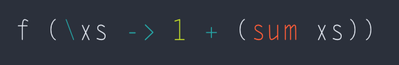

Haskell, likely the most well-known purely functional language
If we split the world into two equal sides, functional and OOP, Haskell is clearly placed on the farthest side of the functional half. The language itself was designed to be a super purely functional which exposes the strong thinking in functional way. People can't keep their OOP or imperative mindset to write the code in Haskell. The language does not allow anyone to write impure code.
Function as first-class citizen
Many widely-used programming languages treat functions as first-class citizen even though they are not 100% precisely functional programming language. Let's implement the function F as mathematically expressed as follows:
f(x): N ↦ N
x ↦ g(x)+g(x+1)
Try it in JavaScript, we may write:

Or in Python, we may do it similarly:

In Haskell, the expression looks similar to math:
Haskell code expresses it so Math, right? :)
Function-first-class is a very useful feature in many languages. Developers are allowed to pass in functions as arguments so the function implementation is kept pure, still :)
Function composition in programming
Like above, many times developers find themselves in a position where they need to write a function which takes an output of another function as its input. This is so-called function composition in Mathematical sense.
For instance, say we have a finite list of data. And we want to sequentially process it through a series of functions. Many languages (or libraries) have implementations in their own fashion. See below:
jQuery : Chain of functions
jQuery utilizes fluent interface which pushes data through a sequence of operations, like a function composition.
.NET's LINQ: Chain of functions
 LINQ is a neat design of Monad in .NET. Every single LINQ operation takes an arbitrary data, process it and returns a wrapped data for a subsequent operation. This is so glorious.
LINQ is a neat design of Monad in .NET. Every single LINQ operation takes an arbitrary data, process it and returns a wrapped data for a subsequent operation. This is so glorious.
ECMAScript6's promise: Injection through the pipeline
 Promise is coming to town. Instead of using a callback, promise takes the data through the processing sequence in a similar sense to function composition.
Promise is coming to town. Instead of using a callback, promise takes the data through the processing sequence in a similar sense to function composition.
Haskell
Haskell seems to love Math. The expression looks absolutely like Mathematical notation.
Well, hey! Still better way in Haskell
Currying
In purely functional language like Haskell, currying is eligible by default. When a function is defined with 4 arguments but when calling with only 3 supplied, Haskell (GHC) does not throw an exception asking for one missing argument, it just wisely returns a currying function which accepts the last missing argument. This is pretty neat, unlike other impure functional languages.
In Haskell, you can define a function where:
Function F does require two arguments by definition. Nonetheless, you can call it with one argument yet it is still legal:

What it returns from above is simply not an exception, but another function which accepts the last argument. A function that returns another function (currying) is far simpler to implement in Haskell compared to other languages.
To create a currying function in Python, you need to:
You are forced to decide preemtively whether a function you're gonna write is a curryable function. You need to force a function to return a function manually.
In JavaScript, things are similar
Many other multi-paradigm programming languages are also the same. Calling a function with missing one or more arguments won't lead to a partial function creation. Instead, the compiler throws an exception due to argument shortage.
In a sense of functional, multi-paradigm languages like JavaScript or Python are not as flexible as purely functional language like Haskell.
Anonymous function
Lambda function is what you call it. Many modern programming languages support this. Say, we are in a position where we want to implement the two-level lambda function below:
f := λx.λg.(1+g(x))
In Python, we may write down:
This doesn't quite seem visually fancy. How many people like how it looks?
In ECMAScript6, we may write:
While it's easy in Haskell:
 What an arousing appearance that is. ECMAScript6 is inspired somewhat by Haskell because the lambda statement looks really amazing in Haskell. You write less, keep the code concise, while maintaining the readability.
What an arousing appearance that is. ECMAScript6 is inspired somewhat by Haskell because the lambda statement looks really amazing in Haskell. You write less, keep the code concise, while maintaining the readability.
Visually, expressions in Haskell are very close to Mathematical expressions. The language itself was designed from ground-up to be a pure language in functional way so it has an extremely nerd look! But it's sexy after all. :)